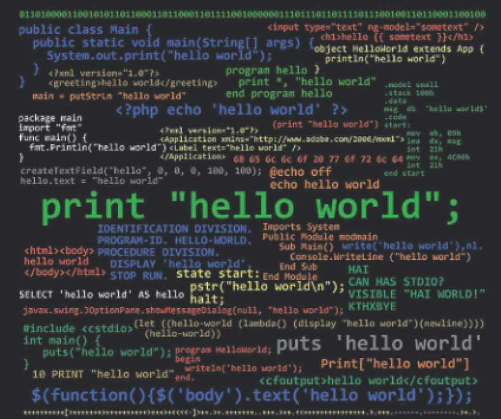

Olivia Jayeola
The Intersection of Cognitive Neuroscience and Artificial Intelligence

Hello World
I was going to write something about why I’m interested in artificial intelligence/computational neuroscience on my LinkedIn About section but it would’ve gone over the word count, then I wanted to make it a post but there’s a word count for that as well ...
Read More

What is Computational Neuroscience/Artificial Intelligence? and Why I'm Interested
My undergraduate degree is in Psychology. When I first started I was fascinated by the depths of the human psyche, I read a lot of Carl Jung’s work and this book called The Denial of Death by Ernest Becker (which is really interesting, also Man’s Search f...
Read More